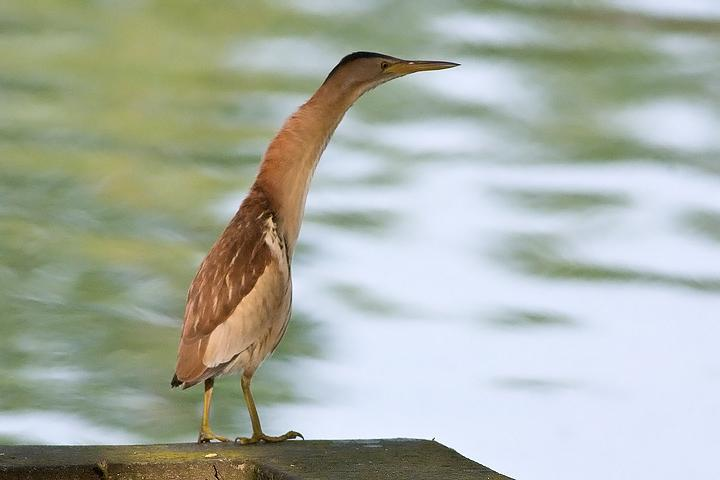

The herons are the long-legged freshwater and coastal birds in the family Ardeidae, with 64 recognised species, some of which are referred to as "egrets" or "bitterns" rather than herons. Members of the genera Botaurus and Ixobrychus are referred to as "bitterns", and, together with the zigzag heron or zigzag bittern in the monotypic genus Zebrilus, form a monophyletic group within the Ardeidae. Egrets are not a biologically distinct group from the herons, and tend to be named differently because they are mainly white or have decorative plumes. Although egrets have the same build as herons, they tend to be smaller. Herons, by evolutionary adaptation, have long beaks.
The classification of the individual heron/egret species is fraught with difficulty, and there is still no clear consensus about the correct placement of many species into either of the two major genera, Ardea and Egretta. Similarly, the relationship of the genera in the family is not completely resolved. However, one species formerly considered to constitute a separate monotypic family Cochlearidae, the boat-billed heron, is now regarded as a member of the Ardeidae.
Although herons resemble birds in some other families, such as the storks, ibises, spoonbills and cranes, they differ from these in flying with their necks retracted, not outstretched. They are also one of the bird groups that have powder down. Some members of this group nest colonially in trees, while others, notably the bitterns, use reed beds.
The herons are medium to large sized birds with long legs and necks. They exhibit very little sexual dimorphism in size. The smallest species is usually considered the little bittern, which can measure under 30 cm (12 in) in length, although all the species in the Ixobrychus genus are small and many broadly overlap in size. The largest species of heron is the Goliath heron, which stand up to 152 cm (60 in) tall. The necks are able to kink in an S-shape, due to the modified shape of the sixth vertebrae of which they have 20-21. The neck is able to retract and extend, and is retracted during flight, unlike most other long-necked birds. The neck is longer in the day herons than the night herons and bitterns. The legs are long and strong and in almost every species are unfeathered from the lower part of the tibia (the exception is the zigzag heron). In flight the legs and feet are held backward. The feet of herons have long thin toes, with three forward pointing ones and one going backward.
The bill is generally long and harpoon like. It can vary from extremely fine, as in the agami heron, to thick as in the grey heron. The most atypical bill is owned by the boat-billed heron, which has a broad thick bill. The bill, as well as other bare parts of the body, is usually yellow, black or brown coloured, although this colour can vary during the breeding season. The wings are broad and long, exhibiting 10–11 primaries feathers (the boat-billed heron has only nine), 15–20 secondaries and 12 rectrices (10 in the bitterns). The feathers of the herons are soft and the plumage is usually blue, black, brown, grey or white, and can often be strikingly complex. Amongst the day herons there is little sexual dimorphism in plumage (except in the pond-herons); differences between the sexes are the rule for the night herons and smaller bitterns. Many species also have different colour morphs. In the Pacific reef heron there are both dark and light colour morphs, and the percentage of each morph varies geographically. White morphs only occur in areas with coral beaches.
The herons and bitterns are carnivorous. The members of this family are mostly associated with wetlands and water, and feed on a variety of live aquatic prey. The diet includes a wide variety of aquatic animals, including fish, reptiles, amphibians, crustaceans, molluscs and aquatic insects. Individual species may be generalists or specialise in certain prey types, like the yellow-crowned night heron, which specialises in crustaceans, particularly crabs. Many species will also opportunistically take larger prey, including birds and bird eggs, rodents, and more rarely carrion. Even more rarely there have been reports of herons eating acorns, peas and grains, but most vegetable matter consumed is accidental.
The most common hunting technique is for the bird to sit motionless on the edge of or standing in shallow water and wait until prey comes within range. Birds may either do this from an upright posture, giving them a wider field of view for seeing prey, or from a crouched position, which is more cryptic and means the bill is closer to the prey when it is located. Having seen prey the head is moved from side to side, so that the heron can calculate the position of the prey in the water and compensate for refraction, and then the bill is used to spear the prey.
In addition to sitting and waiting, herons may feed more actively. They may walk slowly, at around or less than 60 paces a minute, snatching prey when it is observed. Other active feeding behaviours include foot stirring and probing, where the feet are used to flush out hidden prey. The wings may be used to frighten prey (or possibly attract it to shade) or to reduce glare; the most extreme example of this is exhibited by the black heron, which forms a full canopy with its wings over its body.
Some species of heron, such as the little egret and grey heron, have been documented using bait in order to lure prey to within striking distance. Herons may use items already in place, or actively add items to the water in order to attract fish such as the banded killifish. Items used may be man made, such as bread; alternatively striated herons in the Amazon have been watched repeatedly dropping seeds, insects, flowers and leaves into the water to catch fish.
Three species, the black-headed heron, whistling heron and especially the cattle egret are less tied to watery environments and may feed far away from water. Cattle egrets improve their foraging success by following large grazing animals, catching insects flushed by their movement. One study found that the success rate of prey capture increased 3.6 times over solitary foraging.
While the family exhibits a range of breeding strategies, overall the herons are monogamous and mostly colonial. Most day-herons and night-herons are colonial, or partly colonial depending on circumstances, whereas the bitterns and tiger-herons are mostly solitary nesters. Colonies may contain several species as well as other types of waterbird. In a study of little egrets and cattle egrets in India the majority of the colonies surveyed contained both species. Nesting is seasonal in temperate species; in tropical species it may be seasonal (often coinciding with the rainy season) or year-round. Even in year-round breeders nesting intensity varies throughout the year. Tropical herons typically have only one breeding season per year, unlike some other tropical birds which may raise up to three broods a year.
Courtship usually takes part on the nest. Males arrive first and begin the building of the nest, where they display to attract females. During courtship the male employ a stretch display and use erectile neck feathers; the neck area may swell. The female risks an aggressive attack if she approaches too soon and may have to wait for up to four days. In colonial species, displays involve visual cues, which can include adopting postures or ritual displays, whereas in solitary species auditory cues, such as the deep booming of the bitterns, are important. The exception to this is the boat-billed heron, which pairs up away from the nesting site. Having paired the pair continue to build the nest in almost all species, although in the little bittern and least bittern only the male works on the nest.
Some ornithologists have reported observing female herons attaching themselves to impotent mates, then seeking sexual gratification elsewhere.
The nests of herons are usually found near or above water. They are typically placed in vegetation, although the nests of a few species have been found on the ground where suitable trees of shrubs are unavailable. Trees are used by many species, and here they may be placed high up from the ground, whereas species living in reed beds may nest very close to the ground.
Generally herons lay between three to seven eggs. Larger clutches are reported in the smaller bitterns and more rarely some of the larger day-herons, and single egg clutches are reported for some of the tiger-herons. Clutch size varies by latitude within species, with individuals in temperate climates laying more eggs than tropical ones. On the whole the eggs are glossy blue or white, with the exception being the large bitterns which lay olive-brown eggs.
The word heron is rather old and of uncertain origin. It appeared in the English language c. 1300, originating from the Latin aerius meaning aerial, or from Old French hairon, eron (12 century), earlier hairo (11 century), from Frankish haigiro or from Proto-Germanic hraigran.
Herons are also known as "shitepokes" /ˈʃaɪtpoʊk/, or euphemistically as "shikepokes" or "shypokes". Webster's Dictionary suggests that herons were given this name because of their habit of defecating when flushed. The terms "shitepoke" or "shikepoke" can be used as insults in a number of situations. For example, the term "shikepoke" appears in the 1931 play Green Grow the Lilacs, and in the 1943 musical play Oklahoma!.
The 1971 Compact Edition of the Oxford English Dictionary describes the use of "shitepoke" for the small green heron of North America (Butorides virescens) as originating in the United States, citing a published example from 1853. The OED also observes that "shiterow" or "shederow" are terms used for herons, and also applied as derogatory terms meaning a "thin weakly person". This name for a heron is found in a list of gamebirds in a royal decree of James VI (1566–1625) of Scotland. The OED speculates that "shiterow" is a corruption of "shiteheron".
Another former name was heronshaw. Corrupted to handsaw, this name appears in Shakespeare's Hamlet. It is also quite possible that a further corruption took place in the Norfolk Broads where to this day the heron is often referred to as a 'Harnser'.
The herons are a widespread family with a cosmopolitan distribution. They exist on all continents except Antarctica, and are present in most habitats except the coldest extremes of the Arctic, extremely high mountains and the driest deserts. Almost all species are associated with water, they are essentially non-swimming waterbirds that feed on the margins of lakes, rivers, swamps, ponds and the sea. They are predominantly found in lowland areas, although some species live in alpine areas, and the majority of species occur in the tropics.
The herons are a highly mobile family, with most species being at least partially migratory. Some species are partially migratory, for example the grey heron, which is mostly sedentary in Britain but mostly migratory in Scandinavia. Birds are particularly inclined to disperse widely after breeding but before the annual migration where the species is colonial, searching out new feeding areas and reducing the pressures on feeding grounds near the colony. The migration typically occurs at night, usually as individuals or in small groups.
Analyses of the skeleton, mainly the skull, suggested that the Ardeidae could be split into a diurnal and a crepuscular/nocturnal group which included the bitterns. From DNA studies and skeletal analyses focusing more on bones of body and limbs, this grouping has been revealed as incorrect. Rather, the similarities in skull morphology reflect convergent evolution to cope with the different challenges of daytime and nighttime feeding. Today, it is believed that three major groups can be distinguished, which are (from the most primitive to the most advanced):
The night herons could warrant separation as subfamily Nycticoracinae, as it was traditionally done. However, the position of some genera (e.g. Butorides or Syrigma) is unclear at the moment, and molecular studies have until now suffered from a small number of studied taxa. Especially the relationship among the Ardeinae subfamily is very badly resolved. The arrangement presented here should be considered provisional.
A 2008 study suggests that this family belongs to the Pelecaniformes. In response to these findings, the International Ornithological Congress (IOC) recently reclassified Ardeidae and their sister taxa Threskiornithidae under the order Pelecaniformes instead of the previous order of Ciconiiformes.
Other prehistoric and fossil species are included in the respective genus accounts. In addition, Proherodius is a disputed fossil which was variously considered a heron or one of the extinct long-legged waterfowl, the Presbyornithidae. It is only known from a sternum; a tarsometatarsus assigned to it actually belongs to the paleognath Lithornis vulturinus.